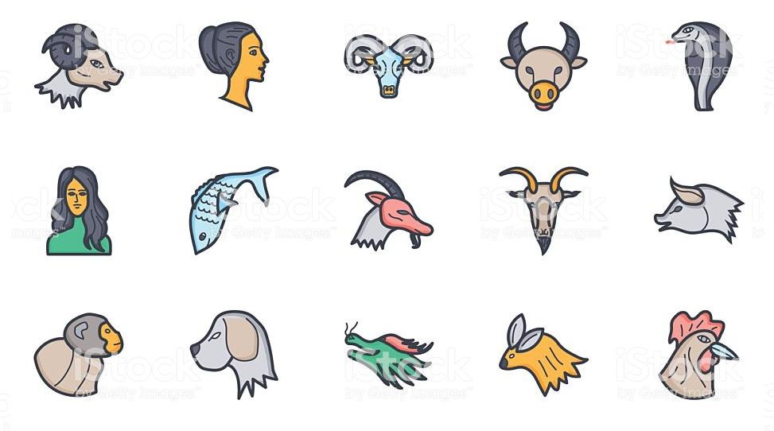

Who am I?
안녕하세요. 저는 경상대학교 3학년에 재학 중인 김은진이라고 합니다.
저는 학부과정에서 임베디드와 시스템 관련 프로그래밍을 이수하고 있습니다.
멋쟁이 사자처럼에 지원해서 웹 프로그래밍 강의를 통해 웹서비스를 효율적으로 만드는 방법을 배우고, 직접 서비스를 개발하고 싶습니다.
만들고 싶은 서비스가 프로젝트로 진행되지 않더라도, 교육받고 경험을 쌓으면서 유용한 아이디어로 발전시켜 차후에 구현까지 해보고 싶습니다.
웹 프로그래밍 교육을 받고 지금 만들고 싶은 서비스를 구현해본 뒤, 학부과정에서 임베디드 및 시스템 공부를 마치면 이들을 응용한 웹서비스도 구상해보고 싶습니다.
그리고 아이디어톤, 해커톤에 참여할 기회가 적은데 타 학과 학생들과 생각을 공유하고, 각종 대회를 통해 견문을 넓히고 싶습니다.
My Ideas
사진저장 세계지도 서비스
사용자가 특정 지역을 선택하면 그 곳에서 찍은 사진을 보여주고,
사용자가 시간 범위를 설정하면 그 당시 사진을 찍었던 장소를 표시해주며 그 곳에서 찍은 사진도 보여줍니다.
유용한 정보전송 메일 서비스

사용자가 설정한 키워드가 포함된 메일만 전송하거나 관련 내용을 추출하여 전송하는 기능.
그동안 구독한 메일 알림서비스를 한눈에 확인하여 차단 또는 차단해제가 용이하게
자신만의 별자리 공유 서비스

거주하는 지역의 하늘에 어떤 별이 떠 있는지 실시간으로 보여줌
자신만의 별자리를 등록
소프트웨어 세미나 및 대회 정보 사이트
소프트웨어와 관련된 세미나, 행사, 대회 정보를 모두 모은 사이트